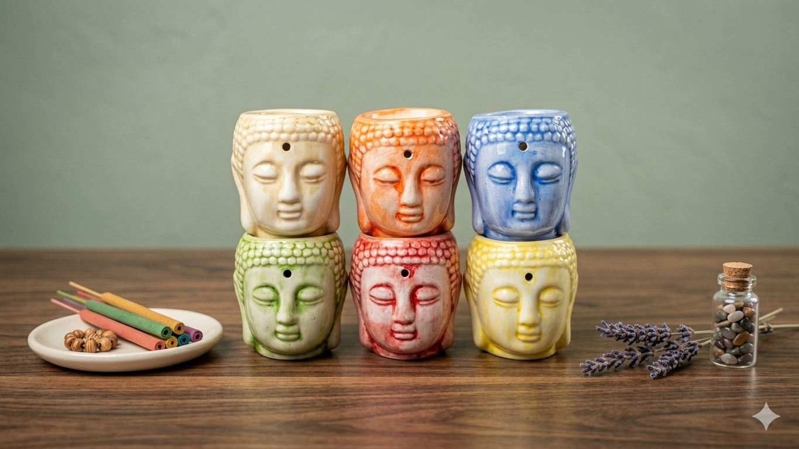
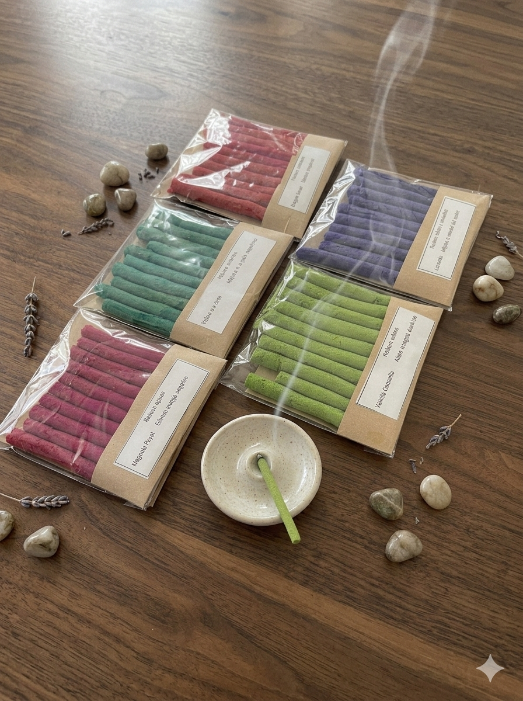
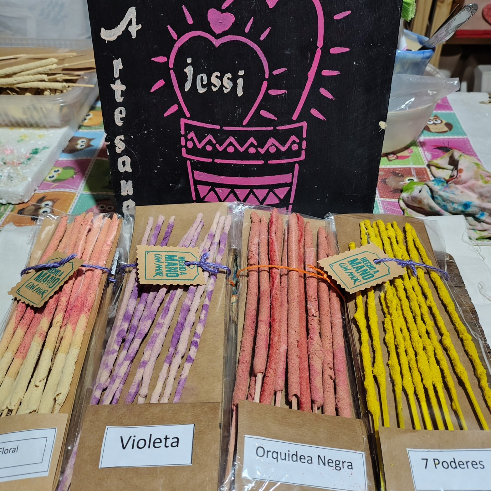
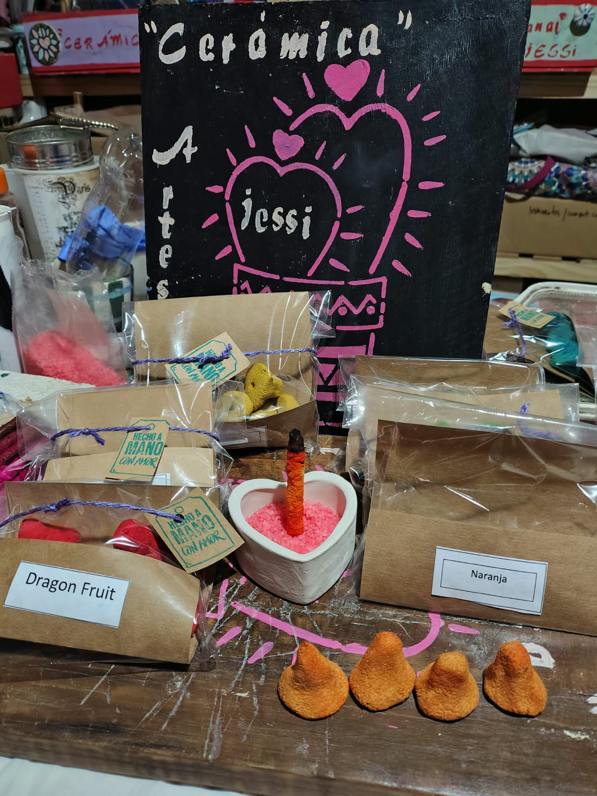
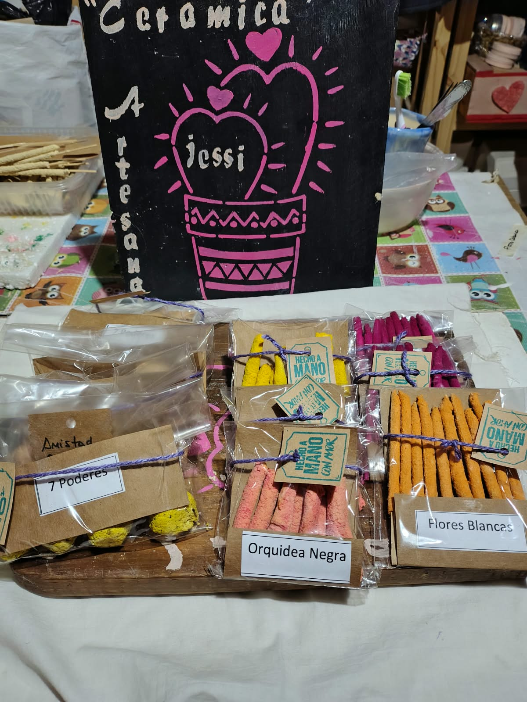
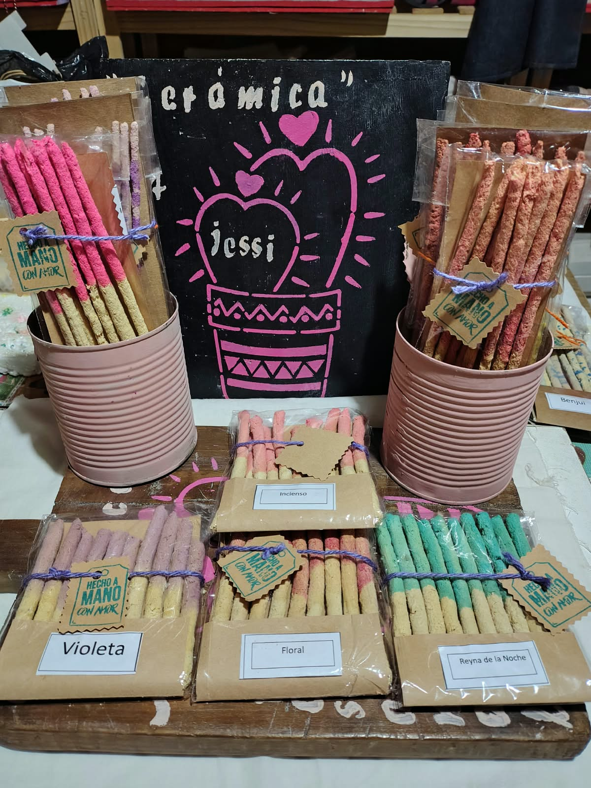
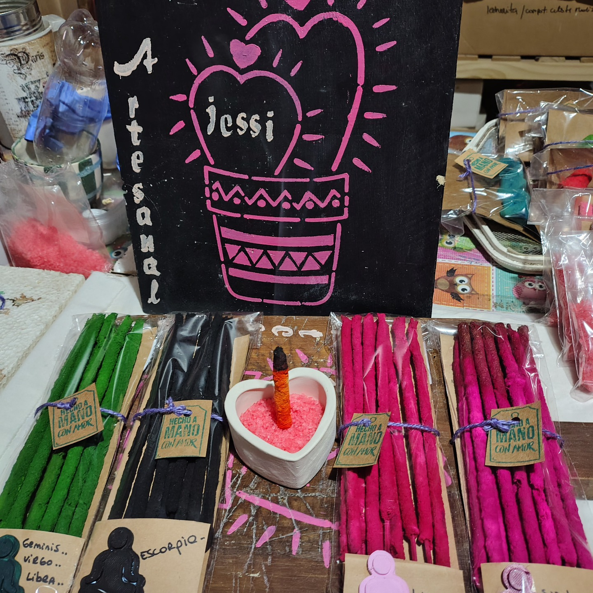

COLECCIÓN
Sahumerios Artesanales
Sahumerios Artesanales hecho a mano.

Hornito "Buda Zen"
Hornitos sahumadores y porta sahumerios con rostro de Buda, ideales para aromatizar y armonizar la energía de tu hogar o espacio de meditación. Elaborados artesanalmente en cerámica con un acabado pátina suave de efecto rústico. Disponibles en una variada paleta de colores (verde, rosa, amarillo, azul, terracota y crema). Una pieza decorativa llena de paz y serenidad.

Sahumerios Artesanales
Sahumerios ecologicos elaborados a mano con resinas naturales, hierbas y aceites esenciales. Presentados en paquetes compostables de papel kraft con varillas de tonos vibrantes. Ideales para sahumados diarios, momentos de meditación o limpieza energética. Disponibles en variedad de fragancias herbales y florales.

Sahumerio Artesanal 3
Desconecta del ruido exterior. 🕊️ Hechos para calmar la mente y armonizar cada rincón de tu hogar.

Sahumerio Artesanal 4
Desconecta del ruido exterior. 🕊️ Hechos para calmar la mente y armonizar cada rincón de tu hogar.

Sahumerio Artesanal 5
Desconecta del ruido exterior. 🕊️ Hechos para calmar la mente y armonizar cada rincón de tu hogar.

Sahumerio Artesanal 6
Desconecta del ruido exterior. 🕊️ Hechos para calmar la mente y armonizar cada rincón de tu hogar.

Sahumerio Artesanal 7
Desconecta del ruido exterior. 🕊️ Hechos para calmar la mente y armonizar cada rincón de tu hogar.